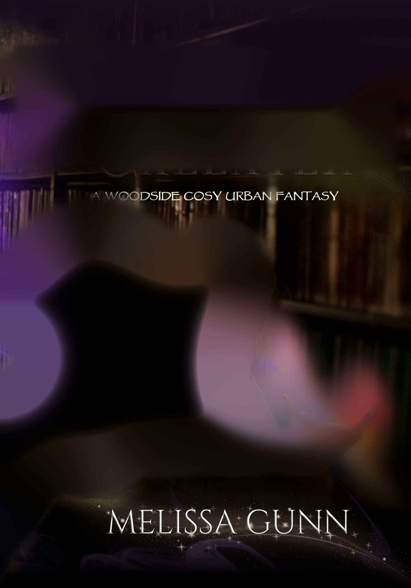
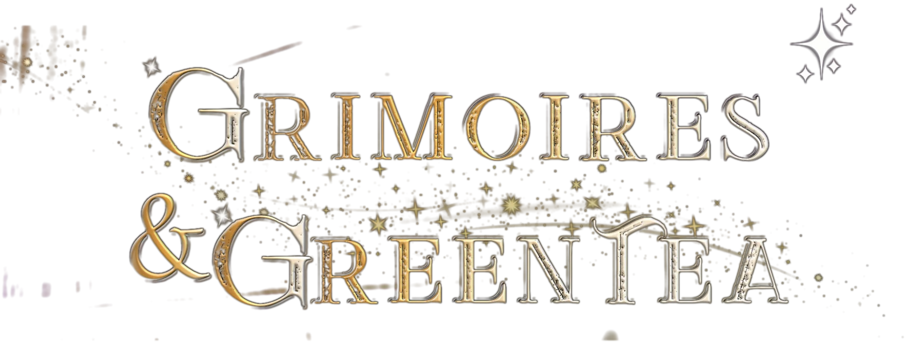
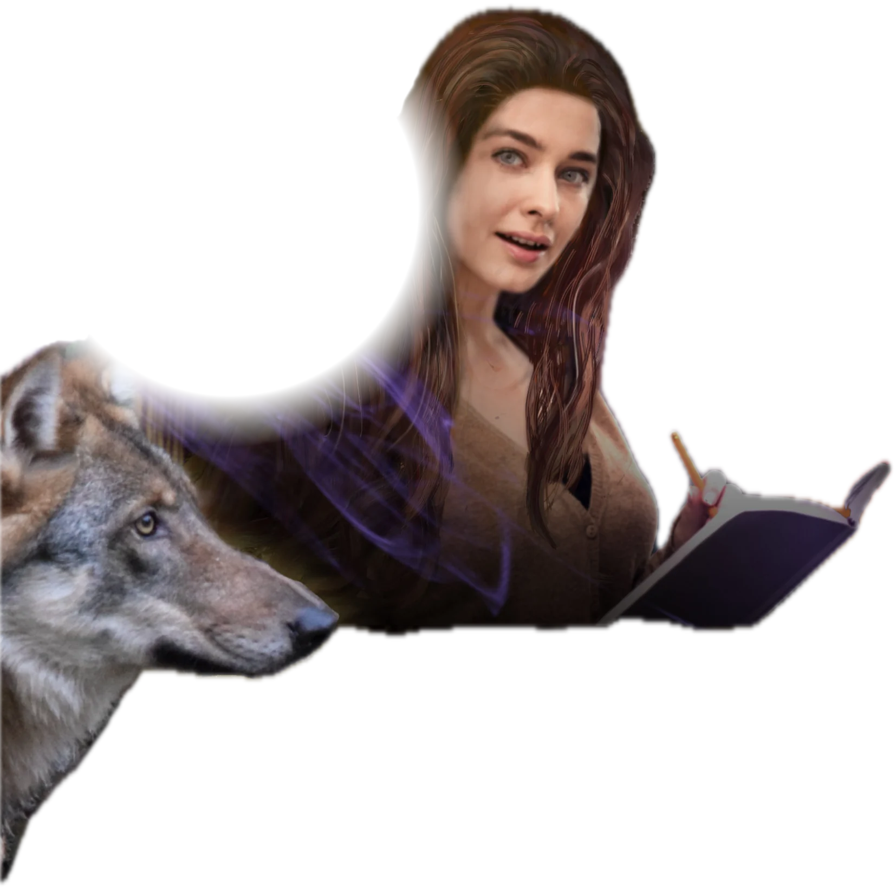
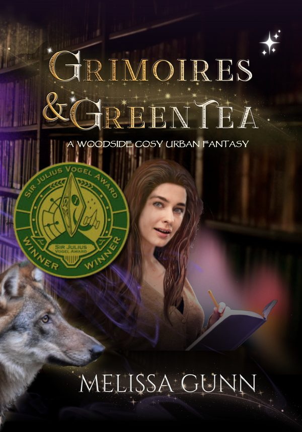
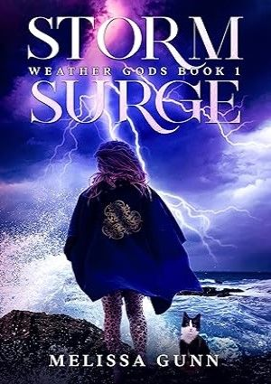
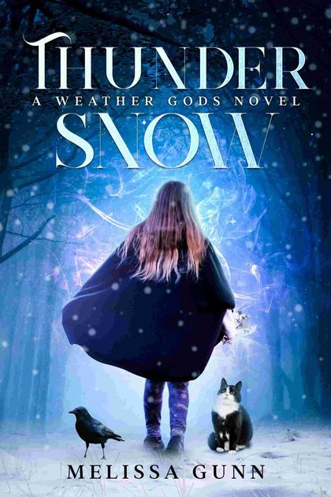
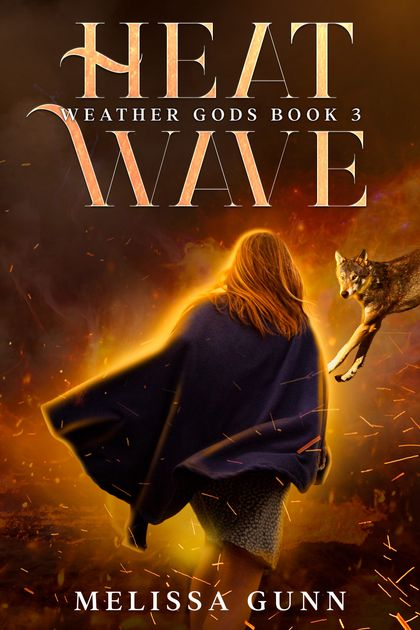
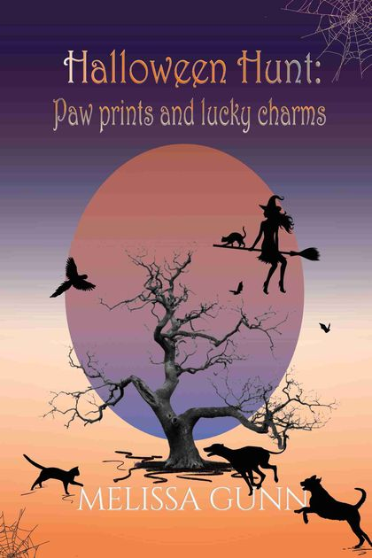
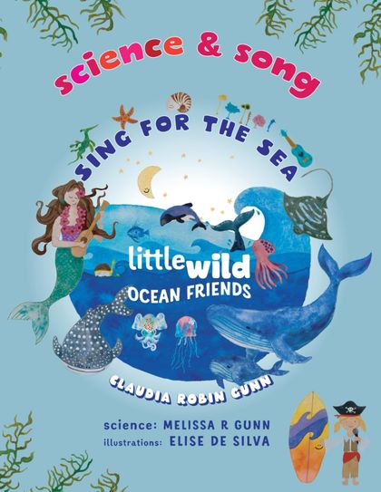
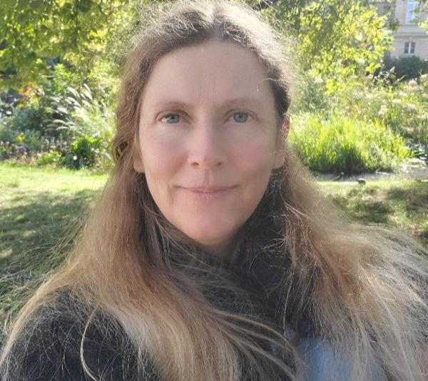

Grimoires & Green Tea
Winner of the Sir Julius Vogel Award for Best Novella 2026



What do you do with a grumpy grimoire?
Grimoires & Green Tea, a Woodside cosy urban fantasy

A bookshop, and a vampire at the door
What do you do with a grumpy grimoire?
When Sibyl unexpectedly acquires a magical bookshop, she’s torn between exhilaration and panic.
She’s landed on her feet on her first venture away from home, as the bookshop comes complete with an apartment above it. But as her would-be customers press her for an opening date, she has to juggle cataloguing the books and trying to keep her new apartment rodent-free, not to mention settling the unruly grimoire her benefactors left her. Plus, there’s a vampire intent on gaining entry.
With no experience in retail and a grumpy grimoire to keep in check, will she ever succeed in running a bookshop?
The Woodside shelf
Life’s not as predictable as it should be when you’re born into a family of Seers, but can’t See yourself. Sibyl’s books, in reading order.
- Divination and DisasterWhen divination fails, will disaster automatically follow?
- Seers and SaltIt’s hard to do the unexpected when you come from a family of seers.
- Grimoires and Green TeaWhat do you do with a grumpy grimoire?
- Solstice & Silver SprayIt’s a tough job running a magical bookshop, but someone’s got to do it.
Weather Gods
Climate fiction meets YA urban fantasy. A near-future north of England, storms with attitude, demigods and shifters, and a girl trying to find her place while keeping her cat fed.
- Flash Flood the prequel novella, free with my newsletter
- Storm Surge the coast is crumbling
- Thunder Snow the underground rivers of Sheffield
- Heat Wave Freya tries pretending to be a mundane




Halloween Hunt
Cleo’s witch is sometimes a little scatterbrained, so it’s just as well she has a cat to keep her in order. A standalone for middle grade to YA readers.
Find a copy
Science and song
Kids’ science, song and activity books with my sister, the songwriter Claudia Robin Gunn. She writes the songs, I bring the science, as Melissa R Gunn.
Sing for the Sea · Sing for the Earth
Science. Nature. Magic.
I spent several years in science (my PhD is in conservation genetics) before deciding it would be fun to write fiction, too. It turns out there’s even more research involved in writing, which suits me.
I like combining facts that seem fantastical with actual fantasy, and I often ponder how mythical creatures would solve problems. I write from Ōtautahi, I narrate my own audiobooks, and I’ve started making my own covers.
- Grimoires & Green Tea won the Sir Julius Vogel Award for Best Novella in 2026.
- A finalist in Grist’s Imagine 2200 climate fiction contest, which got me seven minutes on RNZ.
- Short stories about smashed avo after a volcanic eruption, and the first pav on Mars.
- A collection of blurry wildlife photos to prove I love wildlife photography.
Find me at a con
This October I had a table at Armageddon in Auckland, with the Woodside books, Weather Gods and the rest. Next time, come and say hi.
Start Woodside for free
When divination fails, will disaster automatically follow? Divination and Disaster is the first story of Sibyl’s, and it’s yours free when you join my newsletter.
Flash Flood, the Weather Gods prequel, is free there too.